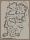
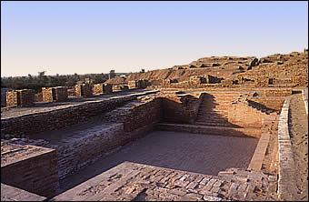

SD Area |
|
Perhaps the most well-known structure from Mohenjo-daro is the 'Great Bath'. The Great Bath is a large sunken structure which was found in the 1925-26 season. This was a great discovery at the time and still fascinates archaeologists today. The Great Bath is a very important structure both in terms of its size and construction. The Bath is 12 metres long , 7 metres wide and reaches a depth of 2.4 metres in some places. The structure is made out of baked bricks lined with bitumen indicating that it was meant to hold water.How the Great Bath was actually used remains a mystery. It has been suggested that it was a place for ritual bathing, or religious ceremonies. 
Great Bath Another important structure in SD Area is known as the 'Great Hall' or the 'Granary'. Archaeologists found a platform which was about 50 metres long and 27 metres wide divided into smaller rooms. They found evidence such as column bases and shallow holes in the platform which suggested that the walls and roof had been made of wood. They also found a large courtyard nearby. It has been suggested that this building was a granary used for storing grain collected through taxation and trade. However, excavators have found no evidence such as grain deposits to support this theory. For this reason, many people now believe that the building was in fact a great hall or gathering place. |